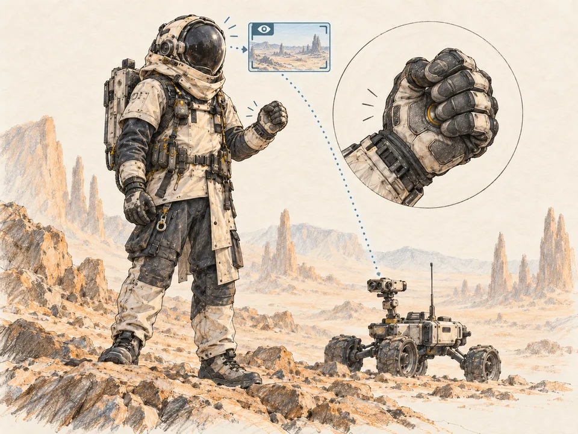
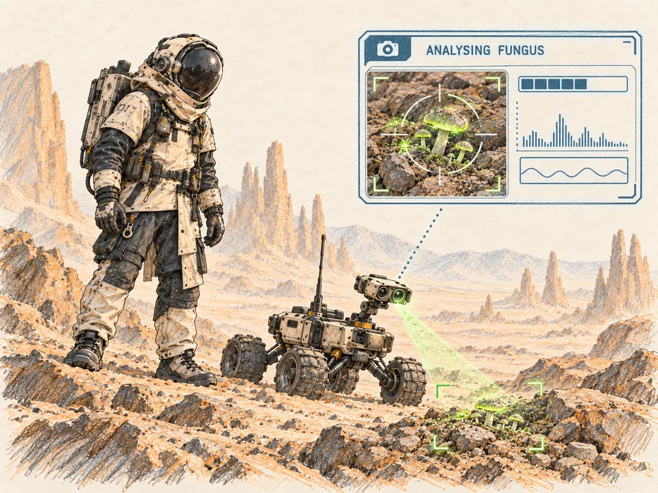
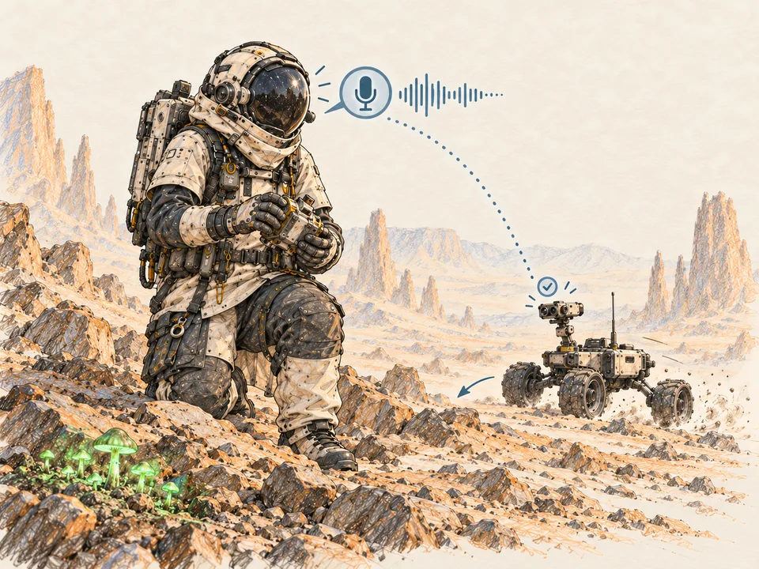
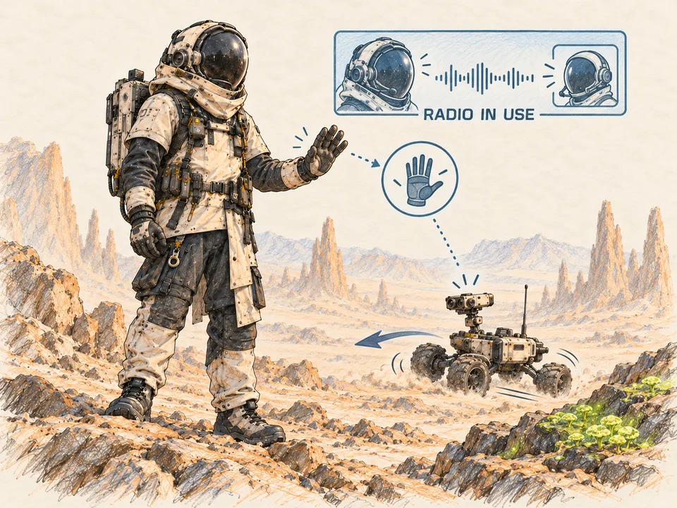
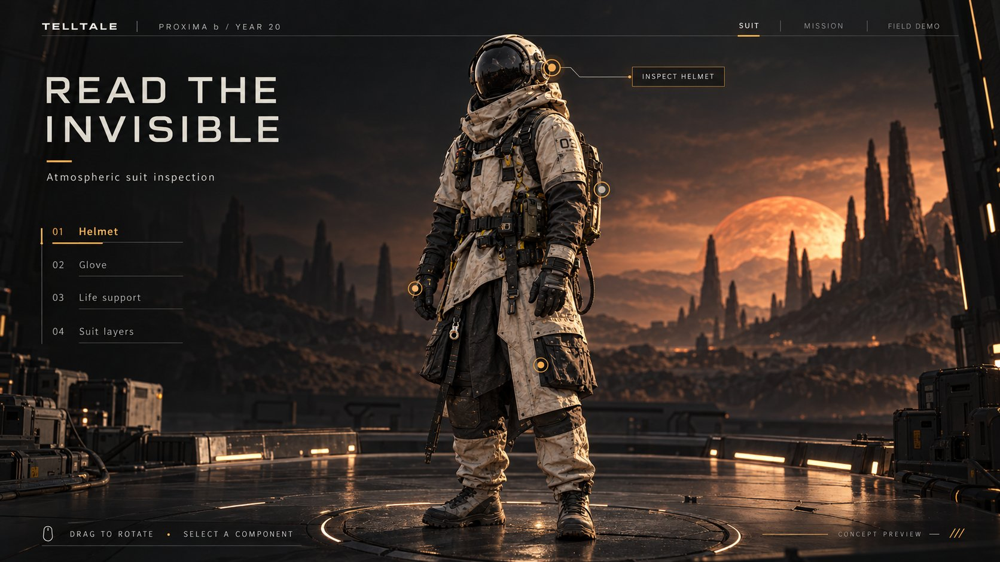

Junior sees the fungus. Marvin sees the warning. Voice, gesture and touch keep the team moving.
EXPLORE THE SUIT 02 COMPONENTS
PROXIMA b / GROUP 08 GROUP 08 · FOUR MODALITIES · ONE MISSION 3D assets supplied by Group 08 · generation credits in Sources
PROXIMA b / GROUP 08
Thank you.
Four modalities. One coherent response to a warning.
LOADING YOUR SUIT…
+ PROXIMA b / ATMOSPHERIC SUIT LOADING 3D MODEL
REAL PROTOTYPE FOOTAGEVideo pending uploadLoad a local MP4 to show the recording at presentation size.
09 / FINAL DEMO · 1:10
One mission. Four ways to act.
Show the real prototype footage, then walk through the four input paths. These buttons simulate the website actions.
Choose an action to walk through the concept.
SIMULATED WEBSITE ACTIONS · NO LIVE CAMERA, MICROPHONE OR PALM FSR INPUT
MOTION
01 / WORLD & PROBLEM · 0:40
The glow is a clue. It is not an answer.
Our speculative Proxima b
In the team's fictional settlement, Marvin salvages materials on a planet where glowing fungus grows near buried hazards. A flare can make the glow harder to interpret. Junior scouts ahead so Marvin can assess the scene before approaching.
Design question
How can a worker detect a patch, communicate with the team, and direct a tool cart when hands or radio are occupied?
Fictional settlement and hazard relationship: Group 08 (2026). Planetary and fluorescence inspiration: Anglada-Escudé et al. (2016); O’Malley-James & Kaltenegger (2019).
02 / USER JOURNEY · 0:40
Marvin’s salvage shift.
At a recovery site that has not been surveyed, Marvin stays back while Junior checks the route. He can then decide where to work safely.
01 / ARRIVEScout before entering
Marvin reaches the site and presses the View Switch on his palm to see Junior’s camera as it scouts ahead.

02 / NOTICEDetect the patch
Junior spots a possible fungal patch and begins analysing it. Marvin stays back while Junior checks the area.

03 / COORDINATEWork around the patch
Once the patch’s location is confirmed, Marvin begins recovery work along a clear route. With his hands occupied, he uses a voice command to bring Junior over to help.

04 / ADAPTGesture while on the radio
While speaking with a teammate, Marvin gestures for Junior to return. Junior acknowledges the command and moves away from the patch.

Journey illustrations: AI-generated colored-pencil concepts from Group 08’s Marvin reference. Prompt record
User: a trained, gloved salvage worker. The fungal cue prompts investigation; it is not a verified hazard reading. Speech, vision and precise hand movement cannot be assumed for everyone, so alternative paths need testing.
03 / SYSTEM MAP · 0:45
One task. Four modalities.
ENVIRONMENTFunguspossible hazard cue
→
VISUAL INPUTJunior cameradetects patch · prototype status to verify
→
VISUAL OUTPUTMarvin’s visordraws attention to patch
VOICEHelmet micteammate ↔ Marvin; Marvin → Junior
↔
GESTUREGlove → Juniorfallback when radio is occupied
+
TOUCH / PALM FSRView Switchpress to show Junior’s camera view
Solid relationship = design intent. The footage and benchmark must identify what the physical prototypes actually perform.
07 / BENCHMARK · 0:50
How well does it work?
Show the comparison, metric, sample and measured result—not only a working clip.
COMPARISONTeam test conditions
Insert the baseline and prototype conditions from your benchmark.
PARAMETERSSuccess · latency · errors
Select only the measures your team actually recorded and explain why they matter.
RESULTData pending
Add the measured values, number of trials, and a concise interpretation.
Evidence slot: team benchmark chart or table has not been supplied for this website yet.
08 / LIMITS & NEXT STEPS · 0:35
What remains to prove.
Current boundaries
The website’s detection and command buttons are illustrative. A 3D model and scripted interaction do not verify camera accuracy, voice recognition, gesture reliability or View Switch reliability in field conditions.
Next tests
Measure false fungus detections in changing light; command success while speech is unavailable; View Switch activation through the glove and whether the intended camera view appears; and access paths for users with limited sight, speech or hand movement.
Replace or refine these limits after reviewing the real prototype footage and benchmark data.
INTERACTION LAB / SIMULATED SIGNALS
Feel the field. Then face the flare.
Move closer to a hidden source. Listen to the counts. Trigger a flare to see how the suit rearranges its warnings.
+GLOVE PROBE
SIMULATED SALVAGE SITE / TOP VIEW
⚑ TEAM HAZARD
PROXIMITY TO SOURCE DISTANT
DISTANTNEAR
01 / TOUCHRadiation pulses
Visual stand-in for glove vibration.
02 / SOUNDGeiger countsEnable sound to hear the simulated clicks.
03 / VISIONSource guidanceMove the probe to explore the field.
Illustrative signals, not a radiation calculator. Touch is shown visually; no vibration hardware is connected.
ONE LEAD SIGNAL PER CHANNEL
Explore → detect → mark. Sound and touch leave the eyes free for work.
!
STELLAR FLARE DETECTEDSeek shelter. Flare warnings now take priority.

3D rendering is unavailable on this device. Explore each component using the menu.